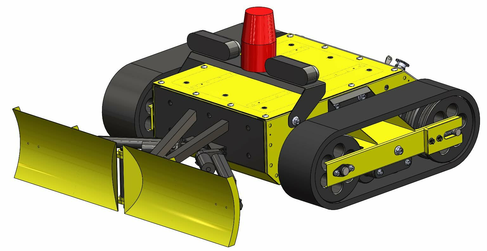
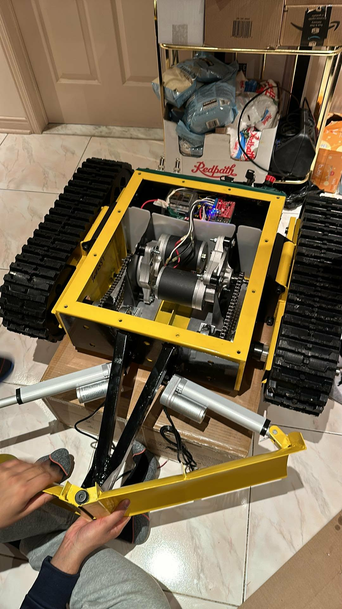
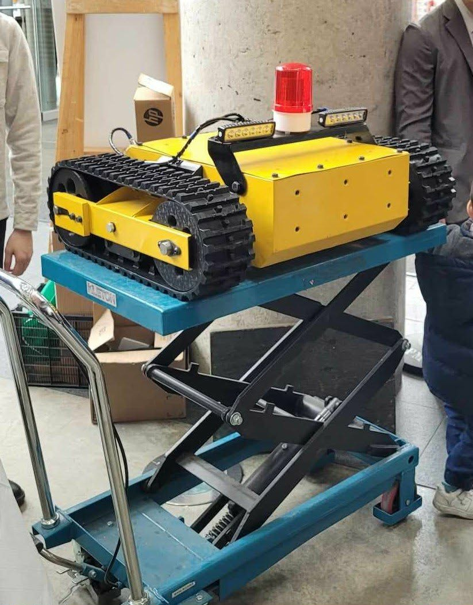
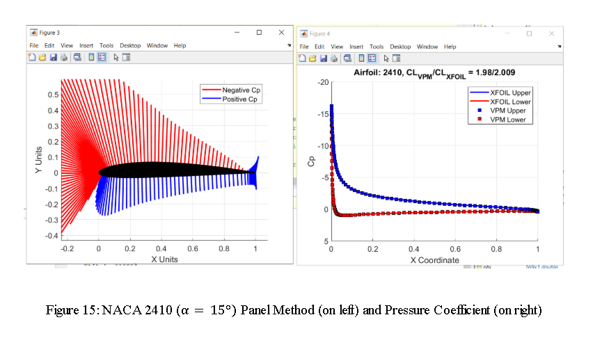

Mechanical Engineering Graduate
SolidWorks (CSWP, CSWA) | Mechanical Design | 3D Modeling | R&D
Montreal-based mechanical engineering graduate focused on bridging digital design and real-world performance through mechanical design, prototyping and testing.
I'm a Montreal-based Mechanical Engineering graduate who enjoys bridging the gap between digital design and physical performance.
My experience includes aerospace patent engineering, mechanical system analysis, manufacturing support, and hands-on engineering through prototyping and testing.
Fluent in English and French. Seeking entry-level opportunities in mechanical design, 3D modeling and R&D engineering.
Advanced part modeling, assemblies, configurations and mass property analysis.
View CertificateValidated SolidWorks fundamentals including part modeling, drawings and engineering design workflows.
View CertificateTeam of 6 · Suspension · Manufacturing · System Integration · Testing
Designed and built a tracked modular rover capable of clearing snow and navigating uneven terrain.

CAD render of the modular tracked rover design including plow and track system.

Motor and drivetrain installation during assembly.

Integrated chassis showing drivetrain, electronics and plow linkage.
MATLAB numerical modeling and aerodynamic analysis

MATLAB output showing panel method discretization and pressure coefficient distribution.
Pratt & Whitney Canada
Email: benjaminsew44@gmail.com
LinkedIn: linkedin.com/in/benjamin-sew
Phone: +1 (514) 992-8161
Location: Montreal, QC